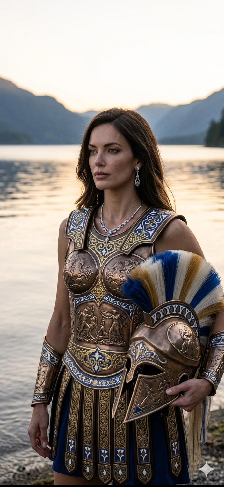
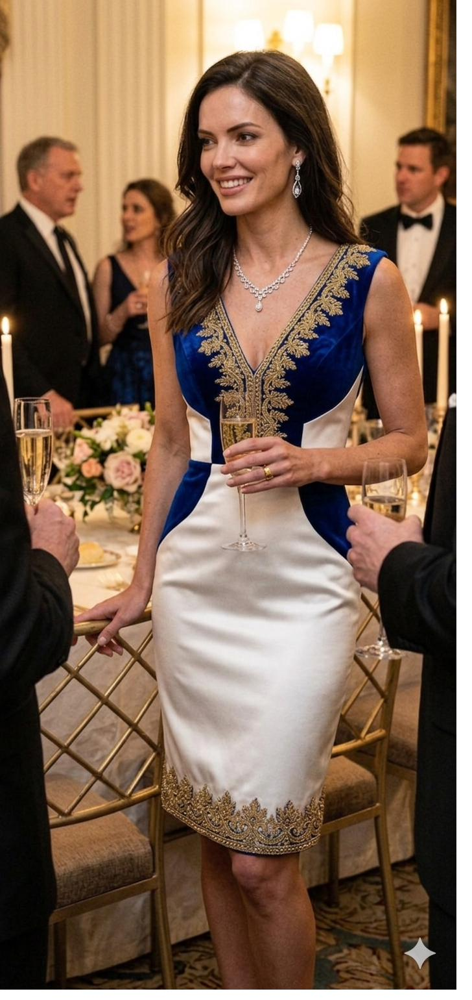

← House Galmir · Vendrith
The Lost Prince — Character Encyclopedia
G
House Galmir · Vendrith
Margaret
Vendrith
✦ The Martinhal Thread
Known as Maggie
Betrothed to Kaelyn Valdren
House Valdren
Fourth of Maia's daughters. The old-money, old-combat-tradition thread into Martinhal, by way of House Valdren. Placed alongside Rhyca Locsird in the same household as sister-in-laws to the Valdren twins — an equal-standing placement with pre-existing friction and no structural room for it to hide.
Fourth of Maia's daughters. Often called Maggie. Betrothed to Kaelyn Valdren of House Valdren, Martinhal — old money, old blood, a house built on gem wealth married to a deep combat tradition.
Her surname was previously logged as Galmir in older source material; canon correction per Session 9 locks it as Vendrith. She sits in the second slot of Maia's alternating Galmir/Vendrith convention among the younger daughters: Claudia Galmir → Margaret Vendrith → Sandy Galmir → Jackie Vendrith → Holly Galmir.
✦ ✦ ✦
Hair
Dark, long, styled with precision. The Vendrith register — controlled, composed, unsoftened.
Eyes
Dark.
Build
Tall, strong, visibly capable. The combat tradition of her future house is not a register she will struggle to enter.
Bearing
Direct. Observant. Carries a steadiness that reads as dependable rather than warm.
✦ ✦ ✦
House Valdren is Martinhal old money and old blood — gem wealth combined with a deep combat lineage. The household is headed by Maret Valdren, the elder sister and heir. Beneath her sit the twin sons Veylin and Kaelyn, both 36 at series start, neither in line to inherit.
The structural fact that matters: Rhyca Locsird is betrothed to Veylin, and Margaret is betrothed to Kaelyn. Two Valdren twins, two sister-in-laws, one household — and Rhyca receives Veylin over Kaelyn purely on Royal bloodline prestige. Margaret knows the birth-order decision was made on bloodline, not merit.
Margaret and Rhyca have pre-existing mutual dislike. Placing them together as sister-in-laws in the same house, at equal standing, with neither outranking the other through her husband — the friction has nowhere structural to hide. This is a placement Maia made knowing exactly what it would do, and she made it anyway.
✦ ✦ ✦

Formal
House colors. Royal blue and gold, the full Vendrith register.

Battle
Prepared for the combat-tradition household she is marrying into. Valdren wealth is old, but so is its fighting lineage.

At Table
The Vendrith poise at private family gatherings. Composed, watchful, never fully off-duty.
✦ ✦ ✦
Mother · The Architect
Placed her into the old-money thread in Martinhal with full knowledge of the friction ahead. The Tyrana Marriage Proposal document ranked Margaret as Maia's secondary candidate across all houses — Maia kept her for Martinhal instead, a steady and costly match.
Kaelyn Valdren
Betrothed · House Valdren (Martinhal)
Twin of Veylin. Not the heir — that is his older sister Maret. Age 36. The marriage is stable and politically sound; the complication is not Kaelyn but the household he shares.
Rhyca Locsird
Future Sister-in-Law · Pre-existing Dislike
Betrothed to Veylin Valdren. Received him on Royal bloodline prestige alone. Margaret will share a household with her as an equal, and the mutual dislike has no place to go.
Maret Valdren
House Heir · Sister-in-Law
The elder Valdren sister, heir to the house. Establishes the neutral ground above the twins — neither Veylin nor Kaelyn will rule Valdren, so neither wife will either. The equal standing is the whole design.